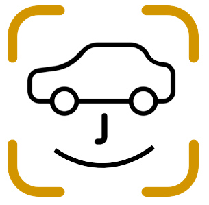

<app-spinner *ngIf="!estadoSpinner"></app-spinner>

<body id="body">
    <header class="header">
        <div class="icon__menu">
            <fa-icon [icon]="iconBarras" id="btn_open"></fa-icon>
        </div>
        <!--<div class="perfil">
            
            <span>carfaceadmin@admin.com</span>
        </div>-->
    </header>

    <div class="menu__side" id="menu_side">
        <div class="name__page">
             <span>CarFace</span>
        </div>

        <div class="options__menu">
            <ul> <!--Menú dinámico-->
                <li class="option" *ngFor="let element of menuOpciones; let i = index"
                    (click)="element? cambiarIndiceMenu(i) : cambiarIndiceMenu(-1)"
                    [ngClass]="!element.habilitado ? 'disable': ''">
                    <fa-icon [icon]="element.icono"></fa-icon>
                    <span> &nbsp;{{element.nombre}}</span>
                </li>
            </ul>
            <!--<div class="derechos-reservados">
                <p>CarFace © 2023</p>
            </div>-->
        </div>
    </div>

    <!--Componentes a mostrarse dentro del contenedor del dashboard-->
    <main [ngSwitch]="opcionMenu">
        <div *ngIf="this.rolUsuario == 'CHOFER'; else administrador">
            <app-inicio *ngSwitchCase="0"></app-inicio>
            <app-registro-vehiculo *ngSwitchCase="1"></app-registro-vehiculo>
            <app-listar-vehiculos *ngSwitchCase="2"></app-listar-vehiculos>
            <app-movimientos *ngSwitchCase="3"></app-movimientos>
            <app-perfil-chofer *ngSwitchCase="4"></app-perfil-chofer>
        </div>
        <ng-template #administrador>
            <app-inicio *ngSwitchCase="0"></app-inicio>
            <app-crear-guardia *ngSwitchCase="1"></app-crear-guardia>
            <app-listar-guardias *ngSwitchCase="2"></app-listar-guardias>
            <app-listar-choferes *ngSwitchCase="3"></app-listar-choferes>

        </ng-template>
        <!--<h4 *ngSwitchDefault>Lo sentimos, esta opción aún no está disponible :(</h4>-->
    </main>
</body>